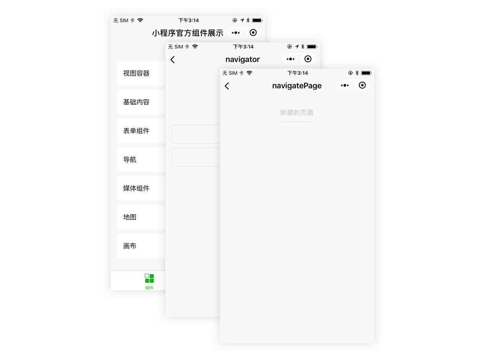

3.2.2 Page
A mini program can have multiple pages, each can own unique features. To avoid confusion, Page is referred to pages in mini program.
1. File structure and path
A Page consists of three parts: UI, Configuration and Logic. UI is described with WXML and WXSS, configuration is done with JSON, Logic is created with JS Script. All files for a Page must be put at the same directory, WXML and JS files are mandatory, JSON and WXSS files are optional.
Path for a Page must be declared in the pages field in app.json, otherwise these pages will not be injected.
Say we have two Pages, pges/index/page and pages/other/other, as following code snippet shows, default page is the first page declared in pages.
code snippet 3-7 page declaration in app.json
{
"pages":[
"pages/index/page", // first page is the default page
"pages/other/other"
]
}
To make things simple, page.wxml, page.wxss, page.json and page.js are used to refer to some specific page's files.
2. Page constructor Page()
Host Environment provides a page constructor Page() to create a page. Page() must be called in page.js, like code snippet 3-8. Page() accepts an Object as parameters, fields are listed in table 3-4, data field can be used to intialize data for WXML template. onLoad(), onReady(), onShow(), onHide(), onUnload() are 5 lifecycle hooks of a Page.onPullDownRefresh(), onReachBottom(), onShareAppMessage(), onPageScroll() are user behavior callbacks, wich all will be explained later.
code snippet 3-8 Page constructor
Page({
data: { text: "This is page data." },
onLoad: function(options) { },
onReady: function() { },
onShow: function() { },
onHide: function() { },
onUnload: function() { },
onPullDownRefresh: function() { },
onReachBottom: function() { },
onShareAppMessage: function () { },
onPageScroll: function() { }
})
table 3-4 page constructor paramters
| parameter | type | description |
|---|---|---|
| data | Object | initial data |
| onLoad | Function | when Page is loaded, it is called earlier than onShow or onReady |
| onReady | Function | when Page is rendered for the first time |
| onShow | Function | when Page is displayed, earlier than onReady |
| onHide | Function | when Page is hidden |
| onUnload | Function | when Page is unloaded |
| onPullDownRefresh | Function | when user pulls down to refresh |
| onReachBottom | Function | when scrolled to the bottom, threshold could be set |
| onShareAppMessage | Function | when user taps top-right button to share |
| onPageScroll | Function | when page scrolls |
| other fields | any | custom fields will be assigned to Page instance |
3. Page's Lifecygle and opening parameters
When page is loaded for the first time, onLoad() will be triggered and triggered for only once until page is destroyed. The passed option could be used, which is explained later.
When page is displayed, such as switched to from other pages, onShow() will be called.
When page is rendered for the first time, onReady() is triggered, meaning page is ready to be manipulated from logic layer.
onLoad() is triggered earlier than onShow(), onShow() is earlier than onReady().
When page goes to background, such as wx.navigateTo() is called to redirect to another page, or bottom tabs are tapped, onHide() is called.
When wx.redirectTo() or wx.navigateBack() is called, current page is destroyed, onUnload() is triggered.
As we can see, a Page's lifecycle is triggered by user interactions, so do avoid chaos, we should call lifecycle methods manually.
Let's at last look at opening parameter, query. Suppose we have a page listing products, tapping the items leads to detail page. We of course cannot create pages for all products, rather we'd create a general detail page, pages/detail/detail, and pass id to the page. The id passed in query could be retrieved in option of onLoad().
code snippet 3-9 Page Constructor
// pages/list/list.js
// use navigateTo to go to detail page
wx.navigateTo({ url: 'pages/detail/detail?id=1&other=abc' })
// pages/detail/detail.js
Page({
onLoad: function(option) {
console.log(option.id)
console.log(option.other)
}
})
A page's URL is the opening path. Similar to URLs of web pages, it consists of path and query, concatenated with ?. Paramter in query is of format: key=value. option passed to onLoad()is an Object, parsed from URL's query. Just the same as web pages' URLs, special characters(&, ? and Chinese character .etc) in values should be UrlEncoded.
4. Page's Data
Chapter 3.1.4 explains the basics of how mini program renders, pages are described by WXML, and WXML can be binded to dynamic data passed from logic layer. "Data" here actually is the data field in Page constructor.
code snippet 3-10 data passed to Page constructor
<!-- page.wxml -->
<view>{{text}}</view>
<view>{{array[0].msg}}</view>
// page.js
Page({
data: {
text: 'init data',
array: [{msg: '1'}, {msg: '2'}]
}
})
Page has setData method, it could be used to update view, by passing data to rendering layer. Because rendering & logic layers are separate in mini programs, data passing in async,
that's why the second parameter of setData is a callback, which is called after view is re-rendered.
setData is called as setData(data, callback), data is an Object made up of multiple key:value pairs.
code snippet 3-11 use setData to update data
// page.js
Page({
onLoad: function(){
this.setData({
text: 'change data'
}, function(){
// this function is called after view is re-rendered
})
}
})
There are some things to bring attention to:
- Modify data by setting
this.datawill not trigger UI refresh, and causing data inconsistency - Because
setData()passes data between process, for performance reasons, keep data under 1024kB - Don't set any value to
undefined, otherwise unexpected bugs may happen
5. User Interactions
Mini Program's host provides 4 page-related user interaction callback:
onPullDownRefresh(), triggered when user pulls down to refresh, to use thisenablePullDownRefreshin app.json must be set totrue. When callback is done,wx.stopPullDownRefreshcould be used to stop.onRechBottom(), triggered when page is scrolled to the bottom, to use thisonReachBottomDistancein page.json must be intialized. The event is triggered only once during the period when the scroll position is down below the threshold set.onShareAppMessage(), the "Share" button at top right is displayed only when this method is declared. This method should return an Object, containingtitleandpath, which are used to share.
code snippet 3-13 use onShareAppMessage to custom share message
// page.js
Page({
onShareAppMessage: function () {
return {
title: 'title to share',
path: '/page/user?id=123'
}
}
})
6. Page redirecting and Router
A mini program can own multiple pages, wx.navigateTo could be used to push a new page in, as Figure 3-6 shows, after calling wx.navigateTo for two times, page count grows to 3, we call this a Page Stack.

Figure 3-6 Page Stack ater using wx.navigateTo for 2 times
To make it simple, [pageA, pageB, pageC] is used to describe page stack, pageA is at the bottom, pageC is at the top and also the page users see. Attention that currently this page stack can have up to 10 pages, which means you cannnot push more pages in after that. Now let's explain some APIs related to navigation.
Use wx.navigateTo({url:'pageD'}) to push pageD into current stack, and it becomes [pageA, pageB, pageC, pageD].
Use wx.navigateBack() to pop the top page from stack, now it is [pageA, pageB, pageC].
Use wx.redirectTo({url: 'pageE'}) to replace current page to pageE, now it becomes [pageA, pageB, pageE]. When it reaches to 10 pages, you cannot push more pages in, this is where redirectTo is useful.
Mini Program offers native Tabbar, tabBar in app.json is used to configure this(Please refer to Tabbar official document for more details).
code snippet 3-14 bottom tab in app.json
{
"tabBar": {
"list": [
{ "text": "Tab1", "pagePath": "pageA" },
{ "text": "Tab2", "pagePath": "pageF" },
{ "text": "Tab3", "pagePath": "pageG" }
]
}
}
If we do wx.switchTab({ url: 'pageF' }) in previous page stack example, the stack will be cleared, all pages except pageA which is declared as Tabbar page are destroyed, then switch to the tab where pageF is in, page stack becomes [pageF]. If tap Tab1 to return to pageA, onLoad in pageA will not be triggered, since the page is not destroyed.
By the way, wx.navigateTo and wx.redirectTo could only be used to open non-TabBar page, wx.switchTab is only for Tabbar pages.
We can also use wx.reLaunch({ url: 'pageH'}) to restart mini programs and open pageH, now the page stack is [pageH]. Following table lists all the navigating methods and their relations to lifecycle hooks.
Table 3-5 navigating methods and relations to lifecycle hooks
| navigating method | when triggered | lifecycle hook(before) | lifecycle hook(after) |
|---|---|---|---|
| initializing | when first page is opened | onLoad, onShow |
|
| open new page | API wx.navigateTo |
onHide |
onLoad, onShow |
| page redirect | API wx.redirectTo |
onUnload |
onLoad, onShow |
| page back | API wx.navigateBack |
onUnload |
onShow |
| Tab | page switch, API wx.switchTab |
refer to Table 3-6 | refer to 3-6 |
| restart | API wx.reLaunch |
onUnload |
onLoad, onShow |
Tab pages' lifecycles(A and B are Tabbar pages, C is page opened from A, D is opened from C) are as follow table, attention that Tabbar pages are not destroyed after being initialized.
Table 3 Routing and relations to lifecycles
| page before | page after | lifecycle hook triggered |
|---|---|---|
| A | A | - |
| A | B | A.onHide(), B.onLoad(), B.onShow() |
| A | B (opened again) | A.onHide(), B.onShow() |
| C | A | C.onUnload(), A.onShow() |
| C | B | C.onUnload(), B.onLoad(), B.onShow() |
| D | B | D.onUnload(), C.onUnload(), B.onLoad(), B.onShow() |
| D(from sharing message) | A | D.onUnload(), A.onLoad(), A.onShow() |
| D(from sharing message) | B | D.onUnload(), B.onLoad(), B.onShow() |